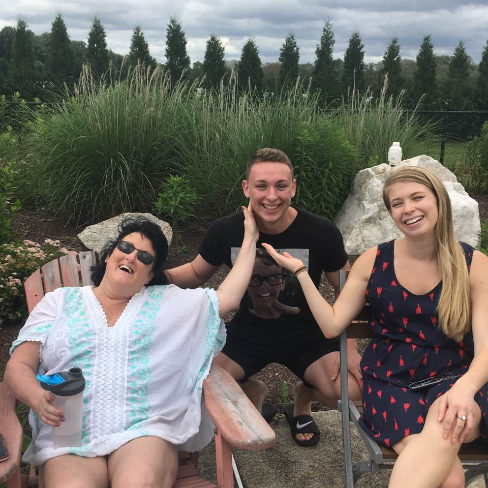
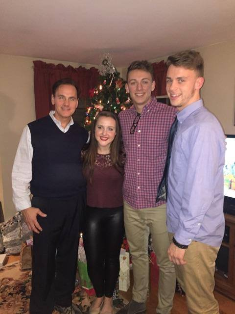

Work:
Currently work at Red Hat in the operating systems department. I've primarily been working with Python in both work and school projects. I also learned Ansible, an IT automation framework, during the summer and used Ansible and python to automate the storage layout configuration process.
School:
Graduated from high school in 2014 from Parker Charter School in Devens, MA Started college in the Fall of 2014 at Nichols College, pursuing a degree in finance. Transferred to UMass Lowell in Spring of 2014. Switched my major from finance to computer science in 2016. I Plan to graduate after the Fall 2018 semester.
Class Schedule:
- Graphical User Interface I
- Artificial Intelligence
- Introduction to Financial Statement Analysis
- EECE Application Programming